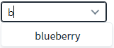
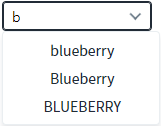
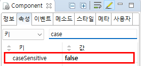

AutoComplete의 'caseSensitive' 속성을 사용하여 대소문자를 구분하지 않고 검색하는 예제입니다. 이 속성을 통해 영문자 검색 시 대소문자의 구분 여부를 설정할 수 있습니다.
대소문자 구분하여 검색하기(기본 설정)
대소문자를 구분하지 않고 검색하기
검색어를 "b" 또는 "B" 로 입력하여 출력된 목록을 비교합니다.
예제 영역 '대소문자를 구분하여 검색'에 구성된 AutoComplete의 입력 필드에 'b'를 입력합니다. 목록에 'blueberry'가 표시됩니다.
Image 1.브라우저(Chrome) 실행 예시 - 대소문자를 구분한 검색 결과

예제 영역 '대소문자를 구분하지 않고 검색'에 구성된 AutoComplete의 입력 필드에 'b'를 입력합니다. 목록에 'blueberry', 'Blueberry', 'BLUEBERRY'가 표시됩니다.
Image 2.브라우저(Chrome) 실행 예시 - 대소문자를 구분하지 않은 검색 결과

컴포넌트의 caseSensitive 속성을 'false'로 정의합니다. 이 속성을 적용하지 않은 경우 기본 값은 'true'(대소문자 구분하여 검색)입니다.
Image 3.웹스퀘어 스튜디오의 Component View 예시

Example 1.Source
<!-- autoComplete의 소스 본문 예시 --> <w2:autoComplete caseSensitive="false"> <!-- 중략 --> </w2:autoComplete>
caseSensitive